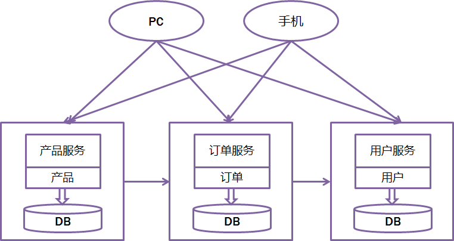
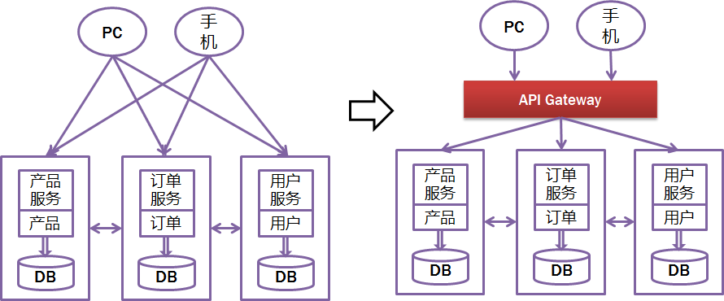
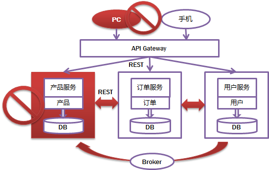
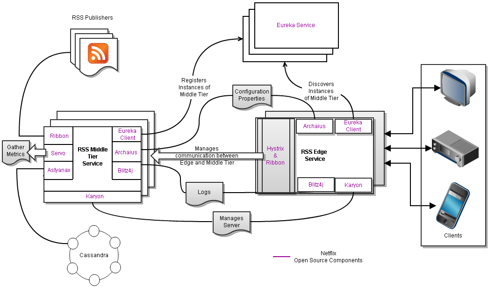
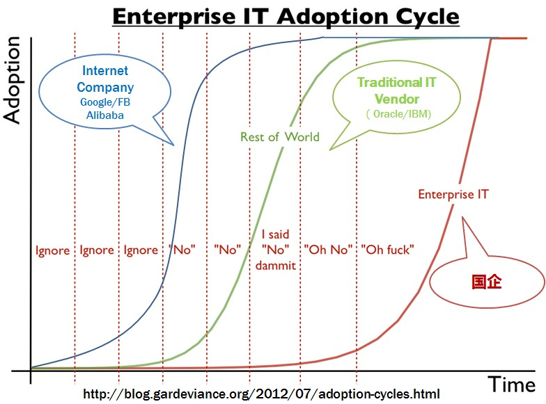

WHAT - 什么是微服务
微服务简介
这次参加JavaOne2015最大的困难就是听Microservice相关的session，无论内容多么水，只要题目带microservice，必定报不上名，可见Microservice有多火。最喜欢其中一页。关于这个典故，可以参考this，此图适用于一切高大上的名字——技术有SOA，Agile，CLOUD，DevOps等等，古代有道，气，八卦等等。此类名词的最大特点就是 一解释就懂，一问就不知，一讨论就打架。 
微服务的流行，Martin功不可没，这老头也是个奇人，特别擅长抽象归纳和制造概念，我觉的这就是最牛逼的markting啊，感觉这也是目前国人欠缺的能力。
Martin Fowler是国际著名的OO专家，敏捷开发方法的创始人之一，现为ThoughtWorks公司的首席科学家.福勒（Martin Fowler），在面向对象分析设计、UML、模式、软件开发方法学、XP、重构等方面，都是世界顶级的专家，现为Thought Works公司的首席科学家。Thought Works是一家从事企业应用开发和集成的公司。早在20世纪80年代，Fowler就是使用对象技术构建多层企业应用的倡导者，他著有几本经典书籍： 《企业应用架构模式》、《UML精粹》和《重构》等。—— 百度百科
先来看看传统的web开发方式，通过对比比较容易理解什么是Microservice Architecture。和Microservice相对应的，这种方式一般被称为Monolithic（比较难传神的翻译）。所有的功能打包在一个 WAR包里，基本没有外部依赖（除了容器），部署在一个JEE容器（Tomcat，JBoss，WebLogic）里，包含了 DO/DAO，Service，UI等所有逻辑。
Monolithic比较适合小项目，优点是：
开发简单直接，集中式管理
基本不会重复开发
功能都在本地，没有分布式的管理开销和调用开销
它的缺点也非常明显，特别对于互联网公司来说（不一一列举了）：
开发效率低：所有的开发在一个项目改代码，递交代码相互等待，代码冲突不断
代码维护难：代码功能耦合在一起，新人不知道何从下手
部署不灵活：构建时间长，任何小修改必须重新构建整个项目，这个过程往往很长
稳定性不高：一个微不足道的小问题，可以导致整个应用挂掉
扩展性不够：无法满足高并发情况下的业务需求
所以，现在主流的设计一般会采用Microservice Architecture，就是基于微服务的架构。简单来说， 微服务的目的是有效的拆分应用，实现敏捷开发和部署 。

用《The art of scalability》一书里提到的scale cube比较容易理解如何拆分。你看，我们叫分库分表，别人总结成了scale cube，这就是抽象的能力啊，把复杂的东西用最简单的概念解释和总结。X轴代表运行多个负载均衡器之后运行的实例，Y轴代表将应用进一步分解为微服务 （分库），数据量大时，还可以用Z轴将服务按数据分区（分表）
微服务的具体特征
先看看最官方的定义吧
The microservice architectural style is an approach to developing a single application as a suite of small services, each running in its own process and communicating with lightweight mechanisms, often an HTTP resource API. These services are **built around business capabilities** and independently deployable by fully automated deployment machinery. There is a bare minimum of centralized management of these services , which may be written in different programming languages and use different data storage technologies.
-- James Lewis and Martin Fowler
把Martin老头的定义大概的翻译一下就是下面几条，这个定义还是太抽象是不是，那就对了，就是要务虚，都说明白了谁还找他付费咨询啊，这么贵。
1. 一些列的独立的服务共同组成系统
2. 单独部署，跑在自己的进程里
3. 每个服务为独立的业务开发
4. 分布式的管理
Martin自己也说了，每个人对微服务都可以有自己的理解，不过大概的标准还是有一些的。
分布式服务组成的系统
按照业务而不是技术来划分组织
做有生命的产品而不是项目
Smart endpoints and dumb pipes（我的理解是强服务个体和弱通信）
自动化运维（DevOps）
容错
快速演化
SOA vs Microservice
除了Smart endpoints and dumb pipes都很容易理解对吗？相信很多人都会问一个问题，这是不是就是SOA换了个概念，挂羊头卖狗肉啊，有说法把Microservice叫成 Lightway SOA。也有很多传统砖家跳出来说Microservice就是SOA。其实Martin也没否认SOA和Microservice的关系。
我个人理解，Microservice是SOA的传承，但一个最本质的区别就在于Smart endpoints and dumb pipes，或者说是真正的分布式的、去中心化的。Smart endpoints and dumb pipes本质就是去ESB，把所有的“思考”逻辑包括路由、消息解析等放在服务内部（Smart endpoints），去掉一个大一统的ESB，服务间轻（dumb pipes）通信，是比SOA更彻底的拆分。
HOW - 怎么具体实践微服务
听上去好像都不错，具体怎么落地啊？这需要回答下面几个问题：
客户端如何访问这些服务？
服务之间如何通信？
这么多服务，怎么找?
服务挂了怎么办？
客户端如何访问这些服务？
原来的Monolithic方式开发，所有的服务都是本地的，UI可以直接调用，现在按功能拆分成独立的服务，跑在独立的一般都在独立的虚拟机上的 Java进程了。客户端UI如何访问他的？后台有N个服务，前台就需要记住管理N个服务，一个服务下线/更新/升级，前台就要重新部署，这明显不服务我们 拆分的理念，特别当前台是移动应用的时候，通常业务变化的节奏更快。另外，N个小服务的调用也是一个不小的网络开销。还有一般微服务在系统内部，通常是无 状态的，用户登录信息和权限管理最好有一个统一的地方维护管理（OAuth）。
所以，一般在后台N个服务和UI之间一般会一个代理或者叫API Gateway，他的作用包括
提供统一服务入口，让微服务对前台透明
聚合后台的服务，节省流量，提升性能
提供安全，过滤，流控等API管理功能
我的理解其实这个API Gateway可以有很多广义的实现办法，可以是一个软硬一体的盒子，也可以是一个简单的MVC框架，甚至是一个Node.js的服务端。他们最重要的作 用是为前台（通常是移动应用）提供后台服务的聚合，提供一个统一的服务出口，解除他们之间的耦合，不过API Gateway也有可能成为单点故障点或者性能的瓶颈。
一般用过Taobao Open Platform的就能很容易的体会，TAO就是这个API Gateway。

服务之间如何通信？
因为所有的微服务都是独立的Java进程跑在独立的虚拟机上，所以服务间的通行就是IPC（inter process communication），已经有很多成熟的方案。现在基本最通用的有两种方式。这几种方式，展开来讲都可以写本书，而且大家一般都比较熟悉细节了， 就不展开讲了。
同步调用
REST（JAX-RS，Spring Boot）
RPC（Thrift, Dubbo）
异步消息调用(Kafka, Notify, MetaQ)
一般同步调用比较简单，一致性强，但是容易出调用问题，性能体验上也会差些，特别是调用层次多的时候。RESTful和RPC的比较也是一个很有意 思的话题。一般REST基于HTTP，更容易实现，更容易被接受，服务端实现技术也更灵活些，各个语言都能支持，同时能跨客户端，对客户端没有特殊的要 求，只要封装了HTTP的SDK就能调用，所以相对使用的广一些。RPC也有自己的优点，传输协议更高效，安全更可控，特别在一个公司内部，如果有统一个 的开发规范和统一的服务框架时，他的开发效率优势更明显些。就看各自的技术积累实际条件，自己的选择了。
而异步消息的方式在分布式系统中有特别广泛的应用，他既能减低调用服务之间的耦合，又能成为调用之间的缓冲，确保消息积压不会冲垮被调用方，同时能 保证调用方的服务体验，继续干自己该干的活，不至于被后台性能拖慢。不过需要付出的代价是一致性的减弱，需要接受数据最终一致性；还有就是后台服务一般要 实现幂等性，因为消息发送出于性能的考虑一般会有重复（保证消息的被收到且仅收到一次对性能是很大的考验）；最后就是必须引入一个独立的broker，如 果公司内部没有技术积累，对broker分布式管理也是一个很大的挑战。
这么多服务，怎么找?
在微服务架构中，一般每一个服务都是有多个拷贝，来做负载均衡。一个服务随时可能下线，也可能应对临时访问压力增加新的服务节点。服务之间如何相互 感知？服务如何管理？这就是服务发现的问题了。一般有两类做法，也各有优缺点。基本都是通过zookeeper等类似技术做服务注册信息的分布式管理。当 服务上线时，服务提供者将自己的服务信息注册到ZK（或类似框架），并通过心跳维持长链接，实时更新链接信息。服务调用者通过ZK寻址，根据可定制算法， 找到一个服务，还可以将服务信息缓存在本地以提高性能。当服务下线时，ZK会发通知给服务客户端。
客户端做：优点是架构简单，扩展灵活，只对服务注册器依赖。缺点是客户端要维护所有调用服务的地址，有技术难度，一般大公司都有成熟的内部框架支持，比如Dubbo。
服务端做：优点是简单，所有服务对于前台调用方透明，一般在小公司在云服务上部署的应用采用的比较多。
这么多服务，服务挂了怎么办？
前面提到，Monolithic方式开发一个很大的风险是，把所有鸡蛋放在一个篮子里，一荣俱荣，一损俱损。而分布式最大的特性就是网络是不可靠 的。通过微服务拆分能降低这个风险，不过如果没有特别的保障，结局肯定是噩梦。我们刚遇到一个线上故障就是一个很不起眼的SQL计数功能，在访问量上升 时，导致数据库load彪高，影响了所在应用的性能，从而影响所有调用这个应用服务的前台应用。所以当我们的系统是由一系列的服务调用链组成的时候，我们 必须确保任一环节出问题都不至于影响整体链路。相应的手段有很多：
重试机制
限流
熔断机制
负载均衡
降级（本地缓存）
这些方法基本上都很明确通用，就不详细说明了。比如Netflix的Hystrix：https://github.com/Netflix/Hystrix

WHY - 微服务的应用
这里有一个图非常好的总结微服务架构需要考虑的问题，包括
API Gateway
服务间调用
服务发现
服务容错
服务部署
数据调用
微服务的优点和缺点（或者说挑战）一样明显。
优点
开发简单
技术栈灵活
服务独立无依赖
独立按需扩展
可用性高
缺点（挑战）
多服务运维难度
系统部署依赖
服务间通信成本
数据一致性
系统集成测试
重复工作
性能监控
对于大的互联网公司，微服务架构是血液，是习惯，每家公司都有自己的套路和架构，细节有不同，但是核心理念是通的。
对于一般的公司而言，实践微服务有非常大的技术挑战，于是乎才有了这么多IT供应商考虑这里的商机。微服务比较适合未来有一定的扩展复杂度，且有 很大用户增量预期的应用，说人话就是新兴的互联网公司。创业初期，不可能买大量的机器或者很贵的机器，但是又必须考虑应对成功后的巨量的用户，微服务架构 成了最好的选择。

So What - 思考
看到上面的图，不是不觉得特别的熟悉？其实我们N年前就用的滚瓜烂熟了好不好？裤子都拖了，你就给我看这个？

from: https://github.com/Netflix/recipes-rss/wiki/Architecture
其实本来所谓的微服务就是对互联网在应用技术的一个总结归纳，IT厂商鼓吹所有概念无非是为了生意（business），SOA是，Cloud是，Microservice也是。下面玩笑很有意思的概括了这个情况（我加了第一条线，原图见这里）

所以微服对我们的思考我觉得更多的是思维上的，对已微服务架构， 技术上不是问题，意识比工具重要。
按照业务 或者客户需求组织资源（这是最难的）
做有生命的产品，而不是项目
头狼战队，全栈化
后台服务贯彻Single Responsibility Principle
VM->Docker （to PE）
DevOps (to PE)
同时，对于开发同学，有这么多的中间件和强大的PE支持固然是好事，我们也需要深入去了解这些中间件背后的原理，知其然知其所以然，设想下，如果我们是一个小公司的CTO，离开的阿里的大环境，在有限的技术资源如何通过开源技术实施微服务？
最后，一般提到微服务都离不开DevOps和Docker，理解微服务架构是核心，devops和docker是工具，是手段。下次在抽时间再学习整理下。
参考资料和推荐阅读
文章来自阿里巴巴技术协会（ATA）精选集，原文首发于阿里云栖社区：http://yq.aliyun.com/articles/2764 。云栖社区是由阿里云负责运营、阿里巴巴技术协会和阿里巴巴集团各技术团队提供内容支持的开放式技术社区：http://yq.aliyun.com。